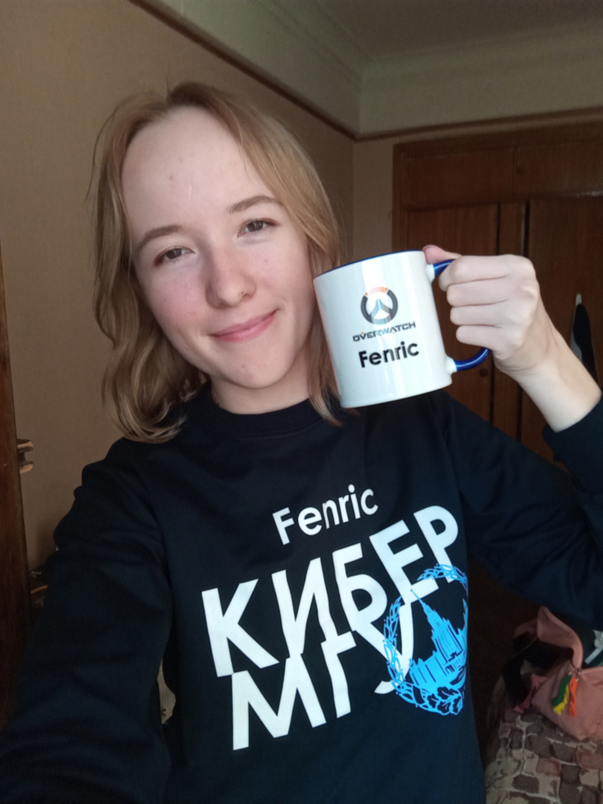

Bekresheva Vera
Contacts
- E-mail: verabekr@gmail.com
- Telegram: @fenric_yo
- Discord: fenric#0921
- Github: vera-fenric
About me
Name: Vera Bekresheva.
Location: Moscow, Krasnodar.
Age: 22.
Hobbies: digital drawing, skiing.
Three strongest soft skills:
- critical thinking (I enjoy catching mistakes in my or others' work and I can also provide some help to those who need it),
- being very polite and non-conflicting (if you see a person abusing someone... it can't be me),
- being an organized person (I write down all my plans and follow them).
Habits:
- no alcohol,
- no smoking.
Education
Russia, MSU, The Faculty of Computational Mathematics and Cybernetics, '22

My programming courses here are:
- Algorithms and algorithmic languages, Pascal:)
- Computer architecture and Assembly language (for real)
- Operating systems, C
- Programming systems, C++
- Object Oriented Programming: C#
- Object Oriented Programming: User Interface Design (a lil bit of XAML)
- Object Oriented Programming: .NET technologies
Work experience
I don't have any work experience as a developer, but I worked as a tutor for children preparing them for the exams, and as a teacher in Formula of Unity.
In my uni I've made some studying tasks
I'm not sure if it works correctly, but I'll make it prettier to the time I make real CV.
- Simple Server (C++)
- Task for Computer Graphics - dynamic 3D model with some effects (C, C++, using freeglut)
- App with UI for Windows - practical task for learing SOLID, MVVM pattern (C#, XAML)
Skills
- Git, GitHub
- C, C++, C#
- Some XAML
- SOLID
- MVVM pattern
- HTML, CSS, JavaScript
- I know how to Google:)
Code example
This is my one-line solution for this kata.
function getMiddle(s)
{
return s.substr(s.length / 2 - 1 + s.length % 2 / 2, 2 - s.length % 2);
}Usually, I don't use the shortest solution because it's harder to understand. I enjoy clear understandable code, and I can't imagine my life without comments.
Languages
-
English
My English level is B2 according to the test here. But I am having problems with grammar due to lack of practice. On the other hand, I feel confident enough with talking and understanding other people.
In 2013 I travelled to London with my English teacher, but I'm not sure if I can consider this as a good practice, because I was way too younger than I'm now:) -
Russian
Russian is my native language.